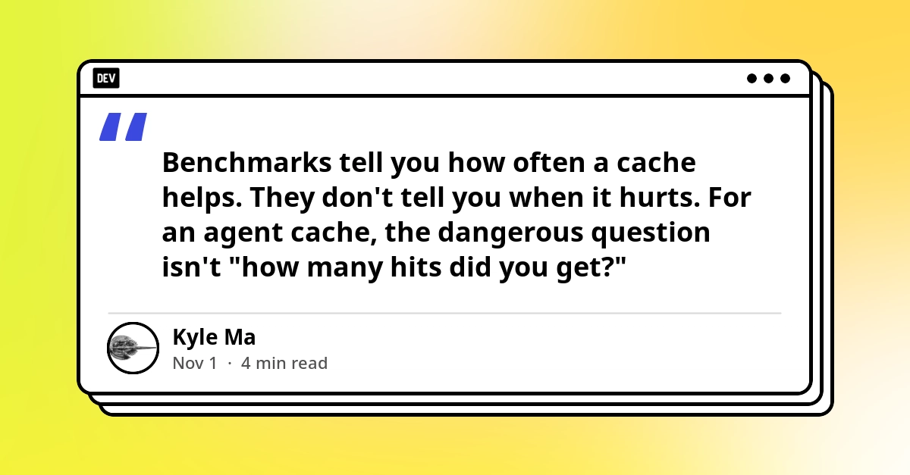
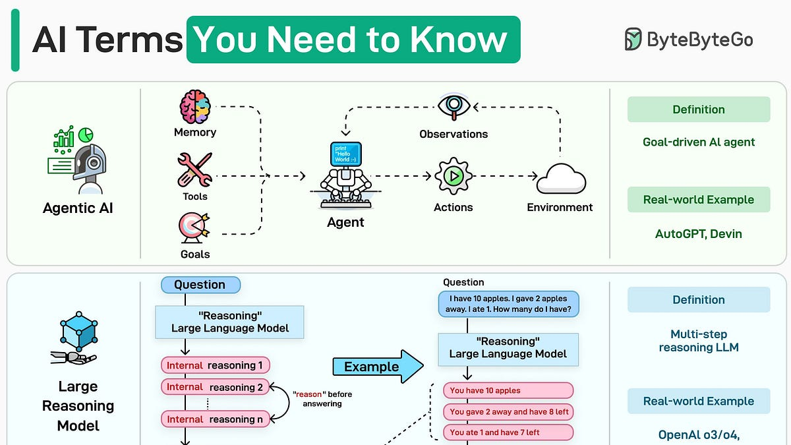
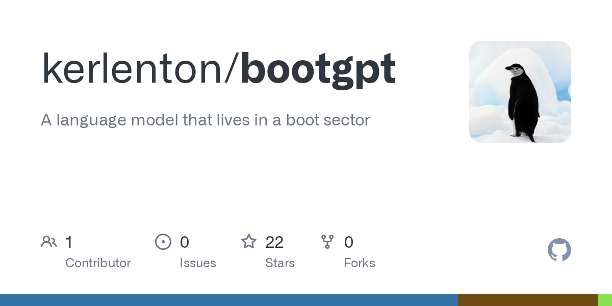
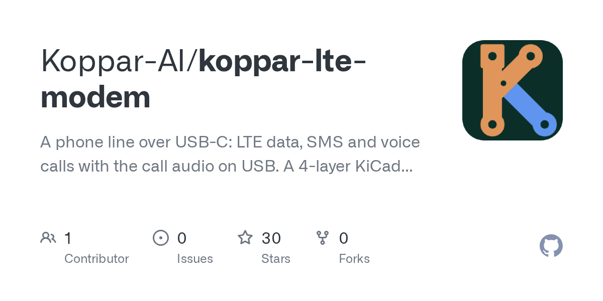

🔥 Top 3 (must read)
How We Took Over ChatGPT Accounts
Parameter Labs found an exploit in ChatGPT's HTML preview feature (the "artifacts" pattern, where the model renders custom HTML apps in a sandbox). The sandbox gap let attacker-controlled HTML reach the user's account. Why it matters: if your product renders LLM-generated HTML or code in an iframe, this is the exact failure mode to check in your own sandbox and CSP setup.
S
Anthropic's Claude AI blocks video game cloning and reverse-engineering
(HN discussion) Claude now refuses requests to recreate or clone video games, and users report that ordinary reverse-engineering tasks (decompiling, protocol analysis) get blocked too. The HN thread collects concrete cases where legitimate dev work was refused. Why it matters: your team uses Claude Code daily. Know which task shapes may now hit a refusal so people don't lose time or assume the tool is broken.

How to build an adversarial eval for your agent cache
Benchmarks tell you how often a cache helps, not when it serves the wrong cached trajectory (e.g. "refund" replayed instead of "charge"). The post proposes a small set of near-duplicate request pairs that must never collide as the real safety test. Why it matters: this is test strategy for AI agents, the same "negative test cases beat happy-path coverage" thinking you apply to E2E suites.

🤖 AI for developers
EP231: AI Terms You Need to Know
ByteByteGo's one-page glossary of AI terms. Useful as a shared vocabulary sheet for a team that is starting to use coding agents.

🎯 For me
The Claude refusal change is the one to watch this week. Ask the team to flag any blocked task in Claude Code so you can see if it affects real work (reverse-engineering legacy code, protocol work).
The adversarial cache eval is a good pattern to copy for any AI feature you ship: write a short list of "must not be confused" input pairs and run it in CI, the same way you run Playwright smoke tests.
Nothing new today for Node.js, React, or Flutter releases.
💡 App ideas & indie builds
A language model that lives in a boot sector
(HN) — a tiny language model that fits in a 512-byte boot sector and runs with no OS. The user problem is curiosity and constraint: how small can "AI" get? A reminder that extreme limits make for a fun, shareable project.

NES Contra (1987) port: ASM to C, then C to WebAssembly
(HN) — a classic NES game rebuilt step by step and now playable in the browser. The problem it solves is preservation plus instant play without an emulator. Good inspiration for "bring an old thing to the web" projects, and timely given the Claude cloning refusals above.
E
A USB-C LTE modem that gives my computer a phone line
(HN) — a small device plus software so a laptop can send SMS and take calls on its own number. The user problem is 2FA codes and calls without a second phone. The software side (local SMS/call API) is the reusable idea.

🎓 Try this
Write an adversarial pair test for one AI feature you own: 10 to 20 input pairs that look alike but must produce different actions, and fail the build if any pair collides. The post shows how: How to build an adversarial eval for your agent cache.